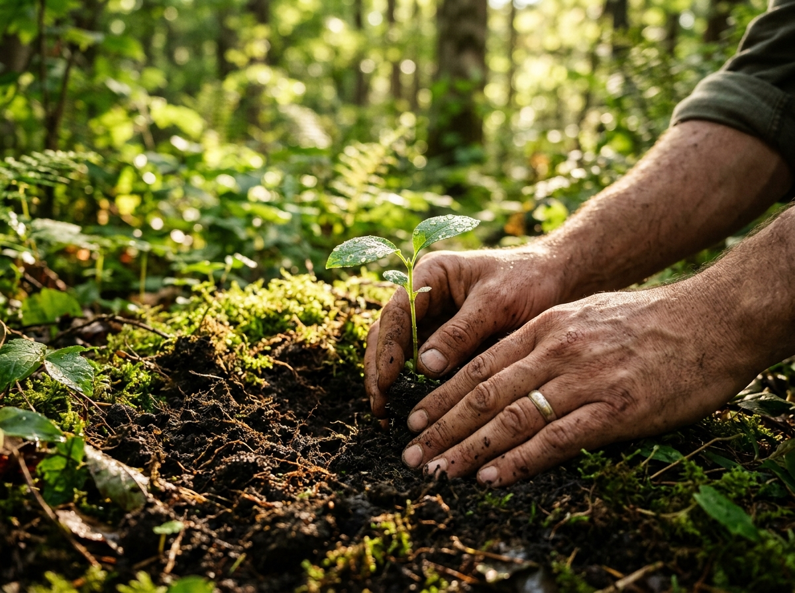

En la Fundación Engrande creemos que el florecimiento interior del ser humano es inseparable del cuidado de la Tierra. Promovemos el despertar de la consciencia, el respeto por todos los seres vivos y el consumo responsable mediante alternativas amigables con el medio ambiente.
De trayectoria social y comunitaria en Antioquia
Compromiso ecológico y circular en cada iniciativa
Personas inspiradas hacia hábitos sostenibles y plenos
Sede principal en la ciudad de Medellín
Un modelo integral donde la introspección personal, el amor por la biodiversidad y los hábitos cotidianos convergen para crear una sociedad regenerativa.
Facilitamos espacios de quietud, autoconocimiento y serenidad mental. Cultivamos una espiritualidad libre de dogmas, centrada en la paz interior, la compasión y el sentido de propósito en la vida cotidiana.
Reconectamos a las personas con los ciclos de la Tierra. A través de jornadas de reforestación, senderismo consciente y educación botánica, restauramos nuestro vínculo sagrado con los ecosistemas de Antioquia.
Fomentamos el consumo consciente mediante productos artesanales elaborados con ingredientes botánicos puros, empaques compostables y procesos limpios que respetan el entorno y a sus artesanos.
La espiritualidad no es un escape de la realidad, sino la forma más lúcida y compasiva de vivir en ella.
En la Fundación Engrande guiamos a personas y familias en el descubrimiento de sus fortalezas humanas fundamentales: la serenidad frente a la adversidad, la empatía con el entorno y la claridad mental que nace de la pausa. A través de círculos de diálogo, pedagogía contemplativa y retiros vivenciales, transformamos el estrés diario en vitalidad y armonía.
Prácticas sencillas para cultivar serenidad en la rutina urbana de Medellín.
Relaciones basadas en la escucha activa y el respeto mutuo.

Cuidar de la tierra es la expresión más tangible de gratitud y respeto espiritual.
Nuestra fundación lidera iniciativas vivas en el Valle de Aburrá y municipios circundantes de Antioquia. Desarrollamos voluntariados ecológicos, pedagogía al aire libre y conservación de flora autóctona. Creemos que cuando un niño o un adulto siembra un árbol con sus propias manos, nace un vínculo de protección indestructible con el planeta.
Recuperación de microcuencas y suelos con especies locales.
Jornadas abiertas a toda la ciudadanía, familias y jóvenes.
Alternativas ecológicas creadas bajo principios de economía circular, ingredientes naturales botánicos y comercio justo en Colombia. Cada producto apoya los programas comunitarios de la Fundación Engrande.
Elaborado mediante saponificación en frío con aceites vegetales puros, infusión de caléndula orgánica y extracto aromático de romero. Limpieza suave para pieles sensibles.
Destilado botánico al vapor proveniente de cultivos ecológicos colombianos. Promueve la serenidad nocturna, despeja las vías respiratorias y revitaliza el ambiente.
Vertida a mano con cera vegetal de soya y pabilo de algodón puro. Infundida con esencias de cedro y vainilla botánica para acompañar tus momentos de meditación.
Mezcla equilibrada de toronjil, manzanilla dulce, hierbabuena y pétalos de rosa silvestre cultivados sin pesticidas por campesinos de la región antioqueña.
Somos una organización sin ánimo de lucro constituida legalmente bajo la legislación de la República de Colombia, con domicilio principal en la ciudad de Medellín, departamento de Antioquia.
Datos oficiales de personería jurídica y registro ante la Cámara de Comercio de Medellín para Antioquia
Facilitar el florecimiento integral de las personas a través del cultivo espiritual, la educación ambiental y la promoción de productos sostenibles, fortaleciendo el tejido social de Medellín y Colombia con un profundo respeto por los ciclos de la naturaleza.
Ser un referente de transformación consciente en Colombia, inspirando a comunidades enteras a vivir con equilibrio interior, consumo regenerativo y en activa fraternidad con los ecosistemas que nos sostienen.
Todo lo que necesitas saber acerca de los programas, voluntariados y principios de la Fundación Engrande.
Organizamos talleres de respiración consciente, meditación mindfulness en la naturaleza, retiros de fin de semana y círculos de reflexión. Nuestro enfoque es incluyente y no dogmático: buscamos que cada individuo descubra paz mental, serenidad interior y sentido de propósito personal.
Seleccionamos materias primas de origen botánico renovable, libres de pesticidas sintéticos y derivados del petróleo. Usamos envases reutilizables de vidrio ámbar, papel Kraft reciclado y etiquetas de papel semilla compostables. Además, priorizamos proveedores y comunidades agroecológicas locales de Antioquia para reducir la huella de carbono.
¡Cualquier persona puede participar! Puedes escribirnos a través del formulario de contacto o al correo institucional talentohumano@engrande.online indicando tu disponibilidad. Periódicamente publicamos las fechas de las jornadas comunitarias de reforestación en Medellín y el oriente antioqueño.
Sí, exactamente. Somos una entidad sin ánimo de lucro formalmente constituida e inscrita ante la Cámara de Comercio de Medellín para Antioquia con NIT 900323466-1, con sede principal en la Calle 80 # 52 20 en Medellín. Operamos bajo el marco legal de la República de Colombia.
El 100% de los excedentes generados por las alternativas sostenibles se reinvierten en el sostenimiento de los proyectos sociales, talleres de crecimiento para poblaciones vulnerables y compra de árboles nativos para reforestación.
Estamos a tu entera disposición para resolver consultas sobre nuestros programas, retiros espirituales, catálogo ecológico o alianzas institucionales.
Escríbenos o visítanos en nuestra sede en Medellín. Nuestro equipo de Talento Humano te responderá con calidez y agilidad.
Medellín, Antioquia, Colombia
Indicativo (+57) para Colombia
Talento humano y atención a usuarios
Información institucional en línea
Lunes a Viernes: 8:00 a.m. a 5:00 p.m. (Jornada continua)
Sábados: 9:00 a.m. a 1:00 p.m.
Domingos y Festivos: Programaciones de retiros en campo.
Completa el siguiente formulario y un coordinador se comunicará contigo.